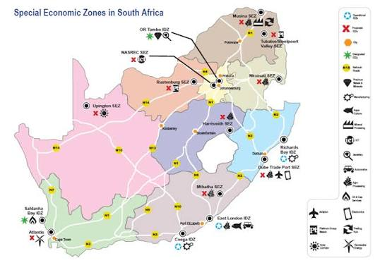

Geographically designated areas set aside for targeted economic activities, offering investors sector-specific infrastructure, preferential tax rates, and a coordinated government facilitation environment.

South African Special Economic and Industrial Development Zones. Source: the dtic, "South Africa's Special Economic Zones" brochure (2021).
The South African Government seeks to transform the economy into a globally competitive industrial economy. One of the critical tools for accelerating the country's industrial development agenda is the Special Economic Zone (SEZ) Programme, mandated by the SEZ Act (Act 16 of 2014), proclaimed on 9 February 2016.
SEZs are a tool to help:
There are currently 12 designated SEZs across eight provinces. Nine are approved and functioning, and three have been approved and are in various stages of preparation. In addition, the Fetakgomo-Tubatse SEZ (FTSEZ) in Limpopo has received Cabinet approval and is pending designation.
Businesses locating within a designated SEZ access a nationally packaged set of incentives designed to reduce the cost of doing business, support capital investment, and improve competitiveness in global markets. The same incentive framework applies across all designated zones.
| Incentive | What it means |
|---|---|
| 15% preferential corporate tax rate | Qualifying businesses operating within an SEZ are eligible for a reduced corporate income tax rate of 15% — compared to the standard rate of 27%. |
| Building & infrastructure allowance | An accelerated building allowance on owned structures used for qualifying trade activities, reducing the net cost of constructing or improving facilities within the zone. |
| Employment Tax Incentive | A cost-sharing arrangement with government that reduces the cost of hiring young and first-time workers. |
| Customs Controlled Area (CCA) benefits | Duty-free importation of production-related raw materials, machinery and assets, as well as VAT exemptions on qualifying supplies — significantly reducing input costs for export-oriented manufacturers. |
Each incentive carries specific qualifying criteria set by the SEZ Act and related legislation including the Income Tax Act, the Employment Tax Incentive Act, and the Customs Duty Act.
| Zone | Province | Focus sectors |
|---|---|---|
| Coega SEZ | Eastern Cape | South Africa's largest SEZ (9,003 ha) adjacent to the deep-water Port of Ngqura — metals, automotive, agro-processing, aquaculture, chemicals, logistics, BPO, energy and maritime. |
| East London IDZ (ELIDZ) | Eastern Cape | One of South Africa's first IDZs, UNIDO-recognised Eco-Industrial Park — automotive components, agro-processing, aquaculture, advanced manufacturing, green technology, digital economy, BPO. |
| Saldanha Bay IDZ | Western Cape | South Africa's only sector-specific SEZ and the only one located within a port — oil and gas, marine repair, maritime fabrication and engineering, logistics (operates as a freeport within the deepest natural port in the southern hemisphere). |
| Atlantis SEZ | Western Cape | Africa's only Greentech SEZ, 40km from Cape Town — renewable energy manufacturing (wind, solar), energy storage, e-mobility, recycling and waste management, advanced materials, green building materials. |
| Dube TradePort SEZ | KwaZulu-Natal | Adjacent to King Shaka International Airport — aerospace, electronics, medical devices and pharma, clothing and textiles, automotive components, logistics. The Dube AgriZone specialises in perishables, horticulture, aquaculture and floriculture. |
| Richards Bay IDZ (RBIDZ) | KwaZulu-Natal | Linked to the deep-water Port of Richards Bay — metals beneficiation (aluminium, iron ore, titanium), renewable energy, agro-processing, marine industry development, ICT. Aims to become SA's primary energy hub for LNG and green energy. |
| OR Tambo SEZ | Gauteng | Multi-precinct SEZ at OR Tambo International Airport — jewellery and diamond beneficiation, precious metals processing, pharmaceuticals, electronics, agro-processing. The Springs Precinct targets logistics and supply chain. |
| Tshwane Automotive SEZ (TASEZ) | Gauteng | Africa's first automotive city — OEM supply chains, automotive component manufacturing and assembly, and new energy vehicle (NEV) production. |
| Maluti-a-Phofung SEZ (MAPSEZ) | Free State | Multi-sector SEZ on the N3 corridor between Johannesburg and Durban — light and heavy manufacturing, logistics and warehousing, cross-docking, vehicle distribution, automotive supply, agro-processing, chemical blending. |
| Platinum Valley SEZ (Bojanala) | North West | Bojanala Platinum District, the western limb of SA's platinum belt (~40% of world platinum production) — PGM beneficiation, fuel cells and hydrogen technology, platinum recycling, autocatalyst manufacture, mining capital equipment, renewable energy, agro-processing. |
| Musina-Makhado SEZ (MMSEZ) | Limpopo | Two-site zone on the N1 corridor — North Site (near Musina): light manufacturing, agro-processing, cold storage, logistics leveraging the Beitbridge border. South Site (near Makhado): metallurgical and mineral beneficiation including ferrochrome, ferromanganese and titanium. Currently implementing a turnaround plan. |
| Nkomazi SEZ | Mpumalanga | Border town of Komatipoort on the Maputo Development Corridor — agro-processing of citrus, subtropical fruits and aromatic plants, nutraceuticals, logistics and freight, alternative energy including gas-to-power. |
| Fetakgomo-Tubatse SEZ (FTSEZ) | Limpopo | Steelpoort, Sekhukhune District, within the Limpopo Platinum and Chrome Cluster — PGM, chrome and vanadium beneficiation, green energy manufacturing including hydrogen, agro-processing, mining inputs, automotive supply. Cabinet-approved, designation imminent. |
Across South Africa's SEZs, a consistent pattern emerges: purpose-built industrial platforms, deep integration with ports and airports, and preferential access to AfCFTA and SADC markets. These zones are not speculative projects but functioning ecosystems with established tenants, supply chains and logistics performance.
The zones are concentrated in strategic locations — deep-water ports (Coega, Saldanha Bay, Richards Bay), international airports (OR Tambo, King Shaka), and key freight corridors (N1, N2, N3, N4) — positioning them as the location of choice for investment in mineral beneficiation, agro-processing, automotive, green technology and petrochemical industries.